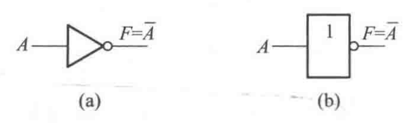
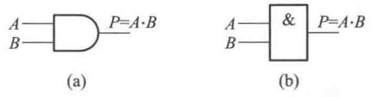
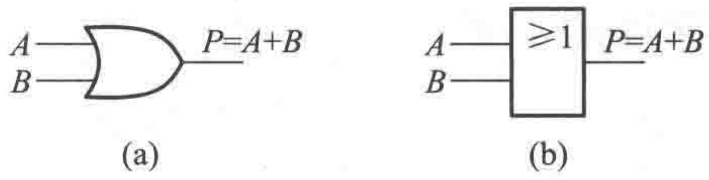
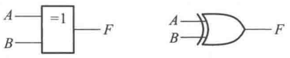
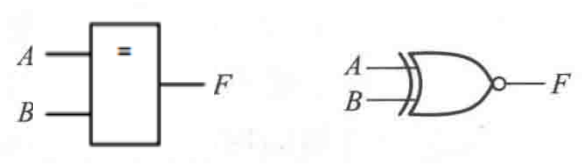
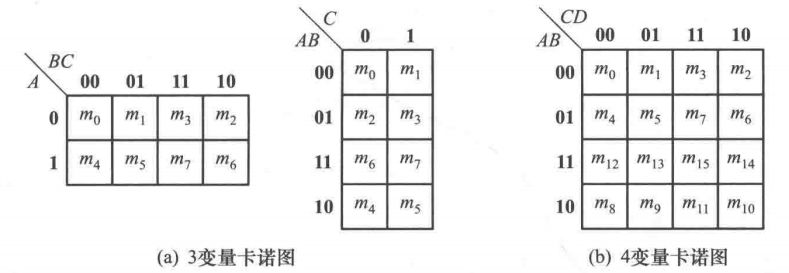
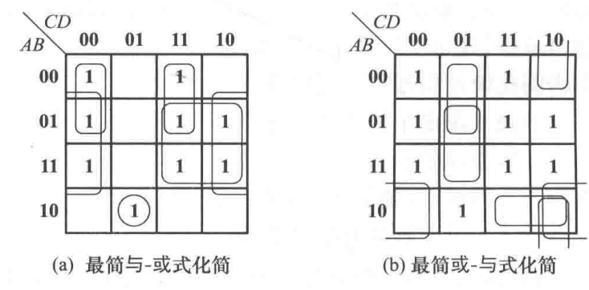

第一部分 编码与逻辑
第1章 绪论
- 信号的分类
- 模拟信号: 在时间, 数值上连续.
- 数字信号: 在时间, 数值上离散.
- 数字脉冲信号: 交替出现的高, 低电平.
- 理想情况: 只存在高低电平.
- 实际情况: 用性能指标衡量:
- T: 周期.
- Tw: 脉冲宽度, 即电压取 0.5Vm 的时间之差.
- tr: 上升时间, 0.1Vm→0.9Vm 的时间.
- tf: 下降时间, 0.9Vm→0.1Vm 的时间.
- 占空比: TTw×100%.
- 数字信号的优势: 利于信号处理, 抗干扰能力强, 易于存储.
- 逻辑器件: 由电子管, 晶体管, 或集成电路组成.
- 基本逻辑器件: 门电路, 触发器.
- 可编程器件(PLD): PLA, PAL, CPLD, FPGA.
第2章 数制与码制
数制
- 数制: 计数进位制. 在数字电路中, 使用二进制.
- 数制转换:
- R进制转10进制: [(N)R]10=∑aiRi.
- R进制转Q进制:
- 整数部分: N整数 整除 QR, 每个余数为结果的1位.
- 小数部分: N小数 乘以 QR, 整数部分为结果的1位.
- R进制转 Rk 进制: 对 (N)R 分节处理, 每 k 个数一节.
- 计算机中数的表示:
- 符号位: 0为正, 1为负.
- 机器数 N: N位二进制数.
- 三种映射方式:
- 原码: 即原二进制数. 数学表达简单但运算复杂, (±A)±(±B) 共8种情况.
- 补码: N<0 时, 将其按位取反(不含符号位)后+1. 补码的运算简单, 满足 A±B=A补±B补. (注: 同号加法可能发生溢出)
- 反码: N<0 时, 将其按位取反(不含符号位). 此时0有两种表示. 运算时满足 A±B=A反±B反. 若最高位还有进位, 该进位需加至最低位.
计算机中的信息编码(码制)
- 数值编码:
- 定点数: 小数点的位置是确定的.
- 浮点数: 小数点位置不定, 由科学计数法表示: N=M×2E.
- 字符码:
- BCD码: 表示数字字符. 用4位二进制数表示1位十进制数.
- 8421BCD: 各位数权重为8, 4, 2, 1, 与二进制相同.
- 2421BCD: 各位数权重为2, 4, 2, 1. 注: 计数方式为 0000→0100→1011→1111.
- 余3BCD: 8421BCD码+3.
- 格雷码: 通过递归方式生成编码. 在递归时, 每1步仅改变其中的一位.
- 以2位为例: 00→01→11→10.
- ASCII码: 由8位2进制构成, 表示常用字母与符号等.
- '0': 48, 'A': 65, 'a': 97.
- 汉字编码: 一般用16bit来表示一个汉字.
- 字符码的加法: 将每一位分别相加, 但需要注意进位要进行转换.
- 检错纠错码: 对二进制信息码 I,J, 有如下定义:
- 码重: w(I), I 中含1的个数.
- 码距: d(I,J): I,J 不相同的位数个数.
- 最小码距: dmin, 影响检错纠错能力的主要因素.
- 奇偶校验码:
- 奇/偶校验: 添加校验位, 使得 w(I) 为奇/偶数.
- 只能发现奇数个错误.
- 只能检错, 无法纠错.
第3章 逻辑函数及其简化
逻辑运算
- 命题: 非真即假的陈述句.
- 二值逻辑: 在正映射情况下, "真"对应1, "假"对应0.
- 1, 0为逻辑常数.
- 二值逻辑公理: A=1→A=0, A=0→A=1.
- 逻辑运算:
- 非(NOT): 记作 f(A)=Aˉ.
- 运算法则: Aˉ=A.
- 符号: 
- 与(AND): 记作 f(A,B)=AB, 逻辑乘.
- 运算法则: A⋅0=0,A⋅1=1,A⋅Aˉ=0,A⋅A=A
- 两输入与门可推广至多输入与门.
- 符号: 
- 或(OR): 记作 f(A,B)=A+B, 逻辑和.
- 运算法则: A+0=A,A+1=1,A+Aˉ=1,A+A=A.
- 符号: 
- 运算优先级: 无括号情况下, 非>与>或.
- 复合逻辑运算:
- 与非(NAND): F=AB.
- 或非(NOR): F=A+B.
- 异或: F=A⊕B=AˉB+ABˉ. 两个输入不同时, 输出1.
- 推广: 多输入含奇数个1时, 输出1.
- 符号: 
- 同或: F=A⊙B=AB+AˉBˉ. 两个输入相同时, 输出1.
- 推广: 多输入含偶数个0时, 输出1.
- 符号: 
- 与或: F=AB+CD.
- 与或非: F=AB+CD
- 符号即在与或基础上输出加"非"(∘).
逻辑运算特性
- 逻辑运算的完备性:
- 基本完备集: {与, 或, 非}.
- {或, 非}, {与, 非} 同样也是完备集. 其中的两个元素在组合后可以表示另一个元素.
- 逻辑代数基本定律: 在证明这些定律时, 一般采用穷举法.
- 反演律(De Morgan定律): AB=Aˉ+Bˉ.
- 吸收律: A(A+B)=A.
- 逻辑代数基本规则:
- 代换规则: 在逻辑代数中, 变量代换依然成立.
- 反演规则: 在求逻辑反函数时, 遵循如下步骤:
- 将所有变量取非.
- 将所有逻辑乘转为逻辑加.
- 添加括号, 使得原有运算顺序不变.
- 对偶规则: 对于逻辑函数 F, 可以求得其对偶函数 F∗. 遵循如下步骤:
- 将所有逻辑乘转为逻辑加, 1转为0.
- 添加括号, 使得原有运算顺序不变.
- 逻辑代数常用公式: 对于所有公式, 都可以对等式两侧求对偶, 从而得到其对偶等式.
- 并项公式: AB+ABˉ=A.
- 消冗因子公式: A+AˉB=A+B. 其中, Aˉ 称为冗因子.
- 消冗余项公式: AB+AˉC+BCD=AB+AˉC. 其中, BCD 称为冗余项.
逻辑函数
- 逻辑函数的描述: F=f(x1,…,xn). 其表达式不唯一, 但真值表是唯一的.
- SOP表示法(Sum Of Product, 与-或式): F=∑mifi.
- 只有 fk=1 的被保留. 简记为 ∑m(k1,k2,…).
- mi 称为最小项.
- POS表示法(Product Of Sum, 或-与式): F=∏(Mi+fi).
- 只有 fk=0 的被保留. 简记为 ∏M(k1,k2,…).
- Mi 称为最大项.
- 卡诺图(Karnaught Map): 二维排列的真值表. 横纵坐标通过格雷码形式排列.
- 最小项对应卡诺图中"1", 最大项对应卡诺图中"0".
- 例: 
- 非完全卡诺图: 存在未定义项(don't care 项) ∑d(i).
- 在逻辑化简中, 这些 don't care项既可做0, 也可做1.
逻辑函数化简
最终化简形式取决于多方面的约束条件.
- 公式法:
- 利用消冗余项/反消冗余项公式.
- 利用最小项展开. 如 AˉCˉDˉ=AˉBCˉDˉ+AˉBˉCˉDˉ.
- 卡诺图简化(推荐)
- 如果要求POS表达式, 则圈出最小项. 若求SOP表达式, 则圈出最大项.
- 步骤:
- 先圈小圈, 尽量使其无孤立点.
- 尽量使圈数最少. 圈数相同时, 圈越大越好.
- 例: 
- 求出题给形式的方法:
- 最简SOP ⟶取非非 与非 ⟶化简 或与非.
- 最简POS ⟶取非非 或非 ⟶化简 与或非.
- 注: 异或/同或式的卡诺图全部是孤立的, 无法进一步化简.
下一部分: 组合逻辑